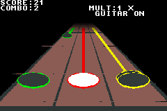
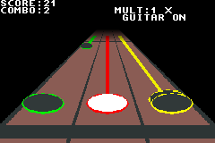

Two-times display of native240x160 frames180–239, exported from mGBA. Both show the same original synthetic fixture. Previews loop at approximately normal frame speed. These show the imported highway repair; they do not establish Windows or physical GBA acceptance.

